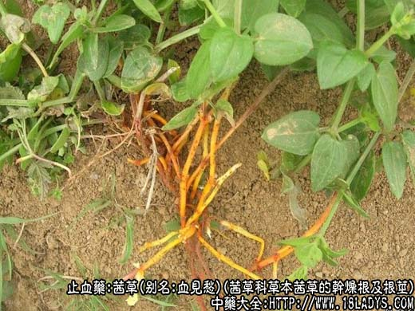
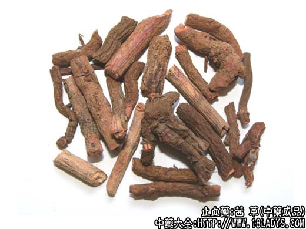
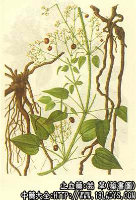

本品为较常用中药。始载《神农本草经》。
来源：为茜草科多年生草本植物茜草的干燥根及根茎。多为野生。
产地：主产于陕西、河南、安徽、河北、山东各省，其它各省亦多有生产。
植物形态：多年生攀缘草本，根茎圆柱形或团块状，根圆柱形或须状，细长，数条或数十条丛生于根茎上。茎方形，具四棱，棱上生逆刺。叶通常4片轮生，叶片卵状心形或狭卵形，先端尖，全缘，叶脉3～5出，有长柄，叶柄及叶脉上均具逆刺。花销，成圆锥形聚散花花序，顶生或腋生，花冠淡黄色5裂，着生于短筒上。浆果球形，熟时红色，老熟后黑色。
性状鉴别：根茎呈不规则块状，根呈圆柱形而弯曲，长10～20厘米，直径0.1～1厘米，数条或数十条丛生于根茎上。表面棕色或红褐色，有细纵纹。外表较易剥落，而露出橙色木部。质脆易折断，断面平坦，扩大镜下观察，可见密集的小孔洞，形如海绵体。气微弱，味淡。
以根粗长，表面红棕色，内碴红橙色或橙色，少细须根，无芦茎者为佳。
功效与作用：生用凉血、行血，炒炭用止血。现代实验发现其作用为：
1、止血。实验证明有轻度止血作用，稍能缩短家兔出血时间和凝血时间，稍能缩短家兔出血时间和凝血时间，炒炭后作用更显著。
2、抗菌。体外试验对黄色葡萄球菌、白色葡萄球菌、肺炎双球菌稍有抑制作用。
3、镇咳。动物实验证实有镇咳作用。
炮制：切片，生用或炒炭。
性味：苦、寒。
归经：入肝经。
功能：凉血、止血、去瘀血、活血。
主治：吐、衄、便、崩、尿血，月经不调，经闭腹痛，跌打损伤，瘀血肿痛等症。
临床应用：为治疗热症出血的常用药。
1、用于治疗崩漏。不论是月经来淋沥不止，或是久漏成崩，流血量多势急，只要属血热者，都可应用茜草根（炒炭），配海螵蛸、荆芥炭、白术、续断等作为基本方，再随证加减；如属血崩虚证，则配固涩药如龙骨、牡蛎，补益药如白术、黄芪等以固涩止血、健脾摄血，方如固冲汤。
2、治疗热证血痢，有凉血止血作用，常配川连、黄芩、地榆等同用，方如茜根散。取当归、丹参、牛膝等，研末服或水煎，黄酒冲服。
3、治老年慢性气管炎。近年来，临床观察和实验室研究发现，茜草根配含羞草根、红背叶（加味含红合剂）治慢性气管炎有较好的止咳、祛痰、平喘作用。其中主要有效药物虽为含羞草根，但茜草根也有镇咳和抗菌作用。
4、治热证吐血、衄血，配生地、白及、侧柏叶等，但不宜用于血虚吐衄。
5、治跌打损伤，由于憋气过度而致内有积瘀者，常配泽兰、赤芍、红花等活血祛瘀药同服。
使用注意：胃弱、泄泻者不宜用。
用量：6～15g，鲜品15～30g。
处方举例：1、固冲服《衷中参西录》：白术30g、黄芪18g、山萸肉18g、生白芍12g、煅龙骨18g、煅牡蛎18g、茜根炭6g、陈棕炭6g、海螵蛸12g，煎汤，送服五倍子细末3g。
2、茜根散：茜草根9g、地榆12g、生地12g、当归9g、黄芩9g、栀子6g、川连4.5g，水煎服。
3、加味含红合剂：鲜含羞草根90g，鲜红背叶60g、鲜茜草根30g，水煎。文火煮六小时（如煎煮时间不足，服后会头晕等反应），分早晚分两次温服。
注：茜草有长叶茜草，中华茜草及黑果茜草（伏茜草）等多种，根部基本相同，无显著区分。
四川省部分地区，以茜草茎藤药用，名茜草藤。